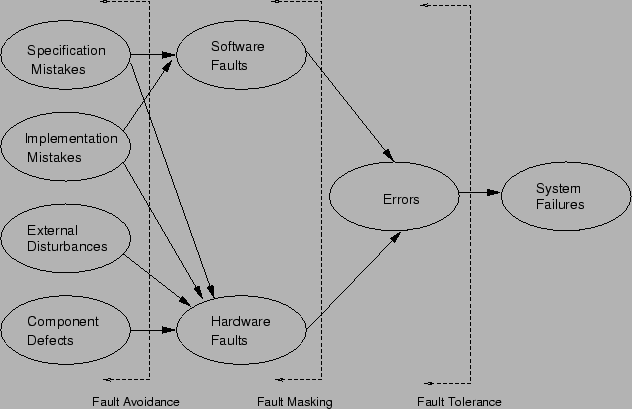

Next: การหลีกเลี่ยงความเสียหาย (Fault Avoidance):
Up: พื้นฐานระบบที่คงทนต่อความเสียหาย
Previous: สาเหตุของความเสียหาย
Contents
Index
เทคนิคหลักในการออกแบบระบบที่คงทนต่อการเสียหายมีอยู่สามประการได้แก่ การหลีกเลี่ยงความเสียหาย, การซ่อนความเสียหาย, และการคงทนต่อความเสียหาย รูป 9.7 แสดงขอบเขตการทำงานของเทคนิคดังกล่าวทั้งสามเทคนิค
Figure 9.7:
ขอบเขตการทำงานของเทคนิคสามประการ:
การหลีกเลี่ยงความเสียหาย, การซ่อนความเสียหาย, และการคงทนต่อความเสียหาย
|

|
Subsections
Vara Varavithya
2002-03-09